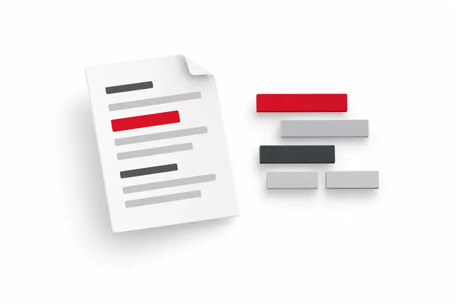

MÖGLICHER NUTZEN
Was wird besser?
Energie steuernMaterial sparenWissen erschließen
NACHHALTIGE KI-IMPLEMENTIERUNG IM UNTERNEHMEN
Wie bringen wir KI und Nachhaltigkeit im Unternehmen zusammen? Indem wir Nutzen, Ressourcen, Menschen und gesellschaftliche Folgen gemeinsam betrachten.
KI kann verbessern, beschleunigen und entlasten. Sie braucht aber auch Strom, Infrastruktur und Kontrolle. Entscheidend ist die Wirkung im gesamten Prozess.
01 / ZWEI SEITEN EINER ENTSCHEIDUNG
Ein Nachhaltigkeitsbericht wird nicht schon dadurch nachhaltiger, dass eine KI ihn schreibt. Zeitgewinn und Umweltentlastung sind unterschiedliche Ergebnisse.
MÖGLICHER NUTZEN
ZUSÄTZLICHER AUFWAND
Ob das gelingt, hängt von Daten, Anwendungsfall und Umsetzung ab. [1]
DIE GRÖSSENORDNUNG
Die IEA erwartet in ihrer Analyse 2026 nahezu eine Verdopplung des weltweiten Rechenzentrums-Strombedarfs bis 2030. KI ist ein wichtiger Wachstumstreiber. Die Zahlen umfassen alle Rechenzentren, nicht nur KI. [1]
02 / BEWUSST PROMPTEN
Token sind Textbausteine, keine Energieeinheit. Weniger unnötige Ein- und Ausgabe kann Rechenarbeit reduzieren. Wie viel Energie das spart, hängt unter anderem von Modell, Hardware, Auslastung und Kontext ab. [5]
Prüfe den freigegebenen Berichtsauszug auf drei unbelegte Nachhaltigkeitsaussagen. Ausgabe als Tabelle: Aussage | fehlender Beleg | Rückfrage. Maximal 150 Wörter. Nutze nur den Auszug. Fehlende Informationen markieren, nichts ergänzen.
Dieser Auftrag ist länger, aber genauer. Er kann unnötige Antworten und Nachfragen vermeiden. Eine Einsparung ist damit noch nicht gemessen.
Nur so viel Ergebnis anfordern, wie die Aufgabe braucht.
Passende Auszüge statt pauschal ganze Archive mitsenden.
Rechenregel oder Suche prüfen, dann das kleinste ausreichend gute Modell testen.
Geprüfte Ergebnisse wiederverwenden; auf Aktualität und Rechte achten.

Eine Studie zu offenen Modellen fand einen stärkeren Einfluss der Ausgabe- als der Eingabetoken auf den GPU-Energiebedarf. Das ist kein universeller Cloud-Umrechnungsfaktor. [5]
RECHENBEISPIEL · FREI ANPASSBAR
Vergleiche nur das angeforderte Ausgabevolumen eines Arbeitsablaufs. Das Beispiel berechnet weder Strom noch CO₂.
Ausgabetoken pro Monat
550.000 Ausgabetoken weniger
Annahme: gleiche Aufrufzahl und ausreichend gute Ergebnisse. Eingabe, interne Verarbeitung und weitere Versuche sind nicht enthalten. Die prozentuale Token-Reduktion ist nicht auf den Energieverbrauch übertragbar.
03 / VON DER IDEE IN DEN BETRIEB
Mein Vorgehen verbindet die sechs Beratungsphasen mit konkreten Umwelt-, Qualitäts-, Ethik- und Verantwortungsfragen. Die folgenden Schritte sind mein Vorschlag für die Praxis.
Welches Problem lösen wir? Ist KI nötig? Vergleich mit einem Prozess ohne KI oder einer einfachen Automatisierung festlegen.
Nachweis: Ausgangswert, messbares Ziel und eine gemeinsame Bezugseinheit, zum Beispiel ein fachlich freigegebener Berichtsteil.
Datenherkunft, Rechte, Betroffene, Übergaben und Nacharbeit erfassen. Energie- und Kostendaten des bisherigen Ablaufs sammeln; fehlende Messwerte offen kennzeichnen.
Nachweis: Prozesskarte, Datenverantwortliche und vereinbarte Grenzen der Bilanz.
Einen kleinen, häufigen und prüfbaren Anwendungsfall auswählen. Modelle und Anbieter nach Qualität, Ressourcenbedarf, Verträgen und verfügbaren Nachweisen vergleichen.
Nachweis: Begrenzter Umfang, Erfolgskriterien, Aufrufbudget, geprüfte Risiken und klare Abbruchregeln.
Mit freigegebenen Daten testen. Prompts, passende Modellauswahl und Wiederverwendung optimieren. Mitarbeitende und ihre Vertretungen einbeziehen, Lernzeit vorsehen und den Umgang mit Fehlverhalten üben.
Nachweis: Prototyp mit Versionen, Gesamtaufwand, Fehlern und Nutzerfeedback.
Gleiche Aufgaben mit und ohne KI vergleichen. Benachteiligung und Auswirkungen auf Betroffene mitprüfen. Korrekturen, Fehlversuche, Prüfzeit und Betrieb mitrechnen. Wo möglich Energie messen; Schätzungen getrennt ausweisen.
Nachweis: Prüfprotokoll und begründete Entscheidung: fortführen, verändern oder stoppen.
Rollen, Schulung, Rückfallweg, Beschwerdeweg und Wartung festlegen. Monatlich Gesamtverbrauch und Aufrufzahlen prüfen. Ungenutzte Anwendungen abschalten.
Nachweis: Betriebsplan mit verantwortlicher Person, Überprüfungstermin und Nutzungsgrenzen.
Menschen müssen prüfen können, Fehler erkennen und eine Verarbeitung stoppen dürfen. Dazu brauchen sie Zeit, Wissen, Zugriff auf Quellen und echte Entscheidungsrechte.
Angelehnt an die SCI-Logik: betriebliche und anteilige herstellungsbedingte Emissionen auf eine definierte Leistung beziehen. Token oder Euro allein sind kein CO₂-Nachweis. [3]
04 / ETHIK & GESELLSCHAFTLICHE VERANTWORTUNG
Für mich gehört zur Nachhaltigkeit auch, wie wir mit Menschen, Wissen und Macht umgehen. Rechtliche Zulässigkeit ist der Ausgangspunkt. Gute Beratung macht zusätzlich Zielkonflikte sichtbar und bezieht Betroffene ein.
Wissen zugänglich machen. Menschen beim Wandel mitnehmen.
Fair prüfen. Widerspruch und Korrektur ermöglichen.
Nutzen und Lasten über das Unternehmen hinaus betrachten.
Eigene Beratungsprinzipien und Prüffragen. Die Abwägung erfolgt am konkreten Anwendungsfall – ein allgemeines Ethik-Siegel lässt sich daraus nicht ableiten.
HUMAN-IN-THE-LOOP
Eine benannte Person kann Ergebnisse prüfen, korrigieren, zurückweisen und den Ablauf stoppen. Leitung und Organisation müssen dafür Kompetenz, Zeit und Befugnisse bereitstellen. Eine Freigabe darf kein bloßer Klick sein.
Fristen dokumentieren: Gestaffelte Termine und Übergangsregeln beachten. Vor dem Einsatz die geltende Fassung und den aktuellen EU-Zeitplan einschließlich einschlägiger Änderungen prüfen und dokumentieren. [6]
Bei der Tool-Auswahl: Ein Enterprise-Tarif allein garantiert keine rechtskonforme Nutzung.
Grenzen kennen: Eine ausgegebene „Gedankenkette“ ist kein verlässlicher Einblick in die tatsächliche Ergebnisentstehung; relevante Einflüsse können unerwähnt bleiben. [10] Der Prompt „Sei fair“ ersetzt keine Kontrolle.
Wichtig für die Einordnung: Organisatorische Verantwortung bedeutet keine pauschale persönliche Haftung jedes Anwenders.
NIST AI RMF / VERANTWORTUNG IM ALLTAG
Das freiwillige NIST AI Risk Management Framework strukturiert den Umgang mit KI-Risiken. Es unterstützt die Organisation von Kontrollen, ist aber kein Nachweis der Rechtskonformität. [7]
Rollen, Regeln und Verantwortung verankern.
Kontext, Betroffene und mögliche Folgen verstehen.
Risiken und Wirkung systematisch untersuchen.
Maßnahmen priorisieren, umsetzen und überwachen.
Govern begleitet den gesamten Lebenszyklus. Die Funktionen greifen ineinander; sie sind keine einmalige lineare Checkliste.
Allgemeine Orientierung zum Quellenstand 09.09.2026. Die konkrete rechtliche Einordnung erfolgt im jeweiligen Projekt.
05 / TRANSFER AUF MEINE ARBEITSPROBE
Mein Vorschlag für den Einstieg: ein freigegebener Auszug aus dem Nachhaltigkeitsbericht.
Ein schneller erstellter Bericht belegt noch keine vermiedenen Emissionen.
Meine Arbeitsprobe: Evaluation & Qualität →Auch diese Seite hat einen Ressourcenbedarf. Dreizehn KI-Bildmotive werden auf dieser Seite verwendet und wurden für die Darstellung komprimiert. Daraus wird keine Aussage über Klimaneutralität abgeleitet.
QUELLEN & EINORDNUNG
Redaktioneller Stand: 09.09.2026. Zahlen, Prognosen und eigene Beratungsempfehlungen sind getrennt. Forschungsbefunde sind nicht automatisch auf jeden Dienst übertragbar.